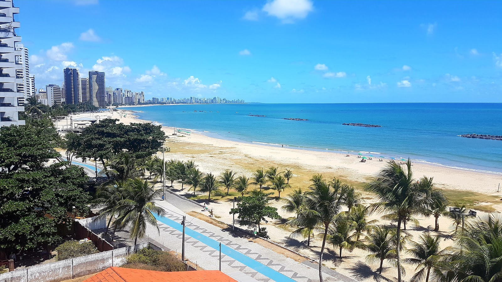
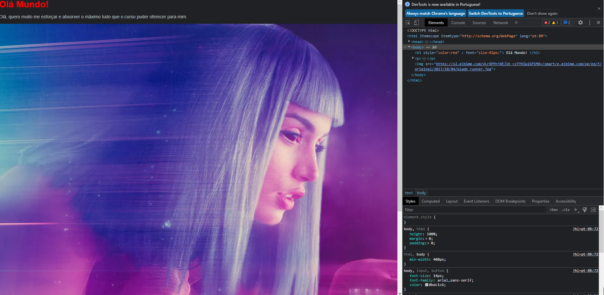
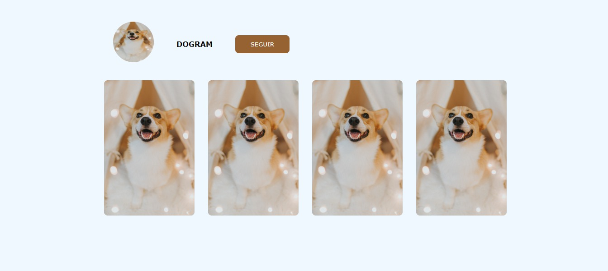
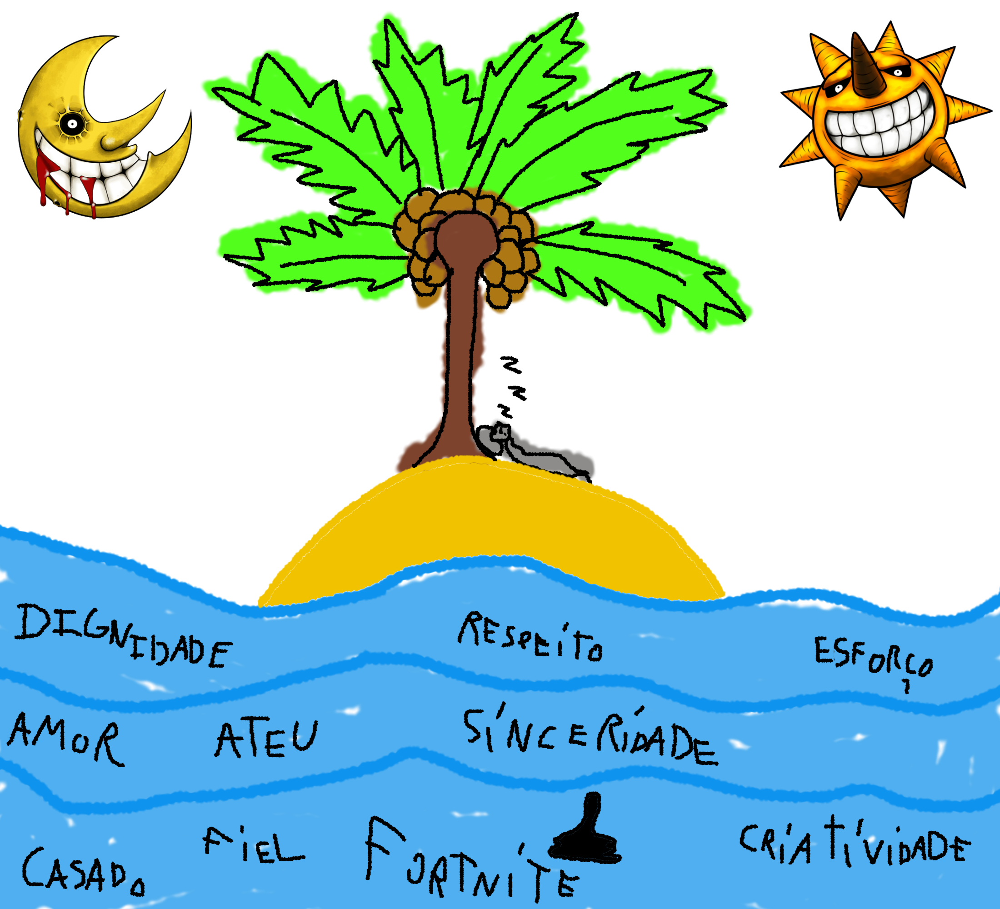

Sobre Mim
Olá, me chamo Wagner Gomes, natural de Jaboatão dos Guararapes (PE) mas morando atualmente em Natal (RN), sou casado e moro com minha esposa e atualmente estou trabalhando como desenvolvedor web utilizando Wordpress na empresa Ocean Big Data, onde faço e gerencio sites de clínicas e advocacia, também neste emprego faço gerenciamento de SEO para melhor posicionamento do Google, fazendo com que ao pesquisar um determinado assunto, seja apresentado a empresa entre os 3 primeiros resultados. Estou estudando atualmente no Programadores do Amanhã, onde aprendo programação e inglês na prática com professores totalmente qualificados e com um suporte para todo o momento e para qualquer dúvida ocasionada, tanto para empregos, tanto para os assuntos lecionados em aula.
Habilidades
Possuo algumas habilidades, mas tem algumas que me orgulho em particular como por exemplo a proatividade, que seria em questão de fazer várias tarefas ao mesmo tempo com fluidez e fazendo todas com qualidade. Também me orgulho de uma habilidade que possuo que seria a de aprender rapidamente assuntos em que me interesso, talvez por questão de necessidade, acabei adquirindo essa habilidade e hoje em dia se tornou muito útil para vários aspectos na vida.
Atividade Realizadas
Aqui estão algumas atividades realizadas no decorrer do curso
que me ajudaram a chegar até aqui, momentos que foram importantes para mim.


